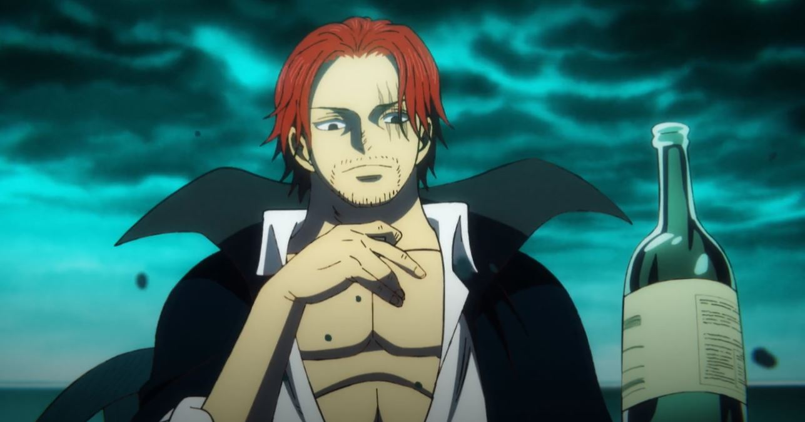
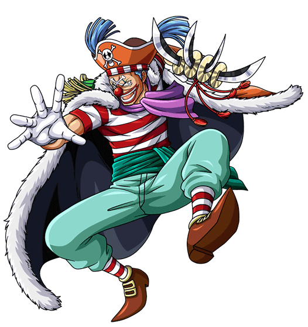
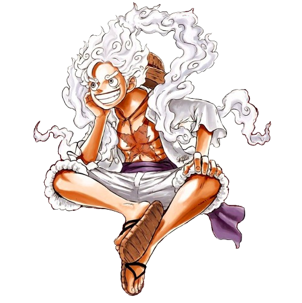

Equipages et personnages
1 - L'équipage au chapeau de paille
L'équipage au Chapeau de Paille est le groupe principal de personnages du manga et de l'anime One Piece
- Monkey D. Luffy : Le capitaine de l'équipage et le personnage principal de l'histoire. Luffy est un pirate
au grand cœur doté du pouvoir du Fruit du Démon, lui permettant d'étirer son corps comme du caoutchouc. Son
rêve est de devenir le Roi des Pirates en trouvant le légendaire trésor connu sous le nom de One Piece.
- Zoro : Le premier membre recruté par Luffy. Zoro est un expert en maniement de sabres, utilisant la
technique du style de combat à trois sabres. Son rêve est de devenir le meilleur escrimeur du monde.
- Nami : La navigatrice de l'équipage. Nami est une cartographe talentueuse et une voleuse experte. Son rêve
est de dessiner une carte complète du monde.
- Usopp : Le tireur d'élite de l'équipage. Usopp est un excellent menteur et un inventeur doué qui fabrique
diverses armes et gadgets. Son rêve est de devenir un brave guerrier de la mer, comme son père.
- Sanji : Le cuisinier de l'équipage. Sanji est un maître de l'art martial du pied qui n'utilise jamais ses
mains pour se battre
- Tony Tony Chopper : Le médecin de l'équipage. Chopper est un renne qui a mangé le Fruit du Démon Hito Hito
no Mi, ce qui lui a donné une forme humaine
- Nico Robin : L'archéologue de l'équipage.
- Franky : Le charpentier naval de l'équipage. Franky est un cyborg humain qui possède une force surhumaine et
est un génie en matière de construction navale.
- Brook : Le musicien de l'équipage. Brook est un squelette vivant qui a mangé le Fruit du Démon Yomi Yomi no
Mi, lui permettant de revenir à la vie une fois après la mort

Marshall.D.Teach "barbe noir"
L'équipage de Barbe Noire, dirigé par Marshall D. Teach, plus connu sous le nom
de Barbe Noire, est l'un des
groupes antagonistes les plus redoutables dans l'univers de One Piece. Barbe Noire est un personnage dont
les
origines restent largement mystérieuses. Peu de détails sont connus sur son passé avant qu'il ne devienne
pirate. Son véritable nom est Marshall D. Teach, mais il est plus souvent appelé Barbe Noire en raison de sa
barbe épaisse et de ses cheveux noirs.Comme beaucoup de pirates dans One Piece, Barbe Noire a pour ambition
de
devenir le Roi des Pirates, en cherchant le trésor légendaire connu sous le nom de One Piece. Il est
déterminé
à atteindre ce but, peu importe les obstacles ou les moyens qu'il doit utiliser pour y parvenir.Les chemins
de
Luffy et de Barbe Noire se croisent pour la première fois à Jaya, où Barbe Noire apparaît comme un
personnage
mystérieux qui semble avoir un intérêt particulier pour les rêves de Luffy. C'est là que Barbe Noire révèle
sa
propre ambition de devenir le Roi des Pirates, mettant en évidence le début de leur rivalité

Akagami no Shanks
Shanks est l'un des personnages les plus emblématiques et respectés de One Piece. Shanks est d'abord présenté
dans le tout premier chapitre de One Piece, où il sauve la vie de Luffy enfant en lui offrant son chapeau de
paille, le chapeau qui deviendra emblématique pour Luffy et son équipage. Shanks est l'un des quatre
Empereurs,
également connus sous le nom de Yonko, qui sont les pirates les plus puissants et les plus redoutés du Nouveau
Monde.Shanks a inspiré à Luffy son rêve de devenir pirate. Luffy considère Shanks comme l'un de ses modèles et
est déterminé à le retrouver un jour pour lui rendre son chapeau de paille et prouver qu'il est devenu un
grand
pirate

Baggy le clown
Baggy le clown est un personnage récurrent dans le manga et l'anime One Piece.Baggy est présenté assez tôt
dans
l'histoire de One Piece en tant qu'antagoniste lors de l'arc de l'East Blue.Son apparence excentrique reflète
sa
personnalité flamboyante et théâtrale.Baggy a son propre équipage de pirates, connu sous le nom de "Baggy
Pirates". Cependant, son équipage est
généralement composé de membres faibles et incompétents qui le suivent plus par loyauté envers son charisme
que
par respect pour sa force réelle.Baggy est un personnage haut en couleur avec une personnalité narcissique et
comique. Il est souvent arrogant et prétentieux, mais il peut aussi être très lâche et paniqué lorsque les
choses tournent mal. Malgré cela, il est assez intelligent et parvient parfois à mettre en place des plans
astucieux pour atteindre ses objectifs

Monkey D Luffy
Luffy est le personnage principal de One Piece et le capitaine de l'équipage au Chapeau de
Paille. Voici une
description de Luffy et de son rôle dans l'histoire . Luffy est un jeune pirate au grand cœur, doté d'une
ambition dévorante : devenir le Roi des Pirates. Il est né dans le village de Fuchsia, où il a été inspiré par
le pirate Shanks le Roux à suivre ses rêves. Après avoir mangé le Fruit du Démon Gomu Gomu, qui lui a donné la
capacité de s'étirer comme du caoutchouc, il a commencé son voyage pour trouver le trésor légendaire, le One
Piece, caché par le précédent Roi des Pirates, Gol D. Roger . Luffy est un personnage imprévisible, souvent
naïf et insouciant, mais doté d'une grande détermination et d'un sens aigu de la justice. Il se bat avec
passion pour protéger ses amis et pour réaliser ses rêves, et il est prêt à affronter n'importe quel obstacle
sur son chemin.
Le Gouvernement Mondial
Le Gouvernement Mondial est une organisation puissante et omniprésente dans l'univers de One
Piece.Le
Gouvernement Mondial est dirigé par les Cinq Étoiles Sacrées, un groupe de cinq personnalités éminentes et
influentes qui prennent les décisions les plus importantes. Ils sont assistés par le Conseil des Rois, qui
représente les différentes nations affiliées au Gouvernement Mondial. Sous ces instances de gouvernance, il y
a plusieurs agences et organisations, dont la plus connue est la Marine

Le Gorosei
Parmis tous les ennemis de luffy ceux ci sont les pires.Le Gouvernement Mondial dans One Piece
est une
organisation politique et militaire qui exerce une autorité presque absolue sur le monde connu. Il est dirigé
depuis la capitale, Marie-Joie, par les Cinq Étoiles.Le Gouvernement Mondial a une autorité incontestée sur
les îles connues comme les États membres, mais il est souvent critiqué pour sa corruption et ses abus de
pouvoir. Il maintient également une politique de suprématie humaine, discriminant d'autres races comme les
géants, les poissons-hommes et les minks.Cependant, tout au long de l'histoire de One Piece, il devient de
plus en plus évident que le Gouvernement Mondial cache des secrets, notamment concernant le siècle manquant,
une période de l'histoire dont la connaissance a été délibérément effacée par le gouvernement. Les intentions
réelles et les motivations derrière les actions du Gouvernement Mondial deviennent l'un des principaux sujets
de l'histoire.